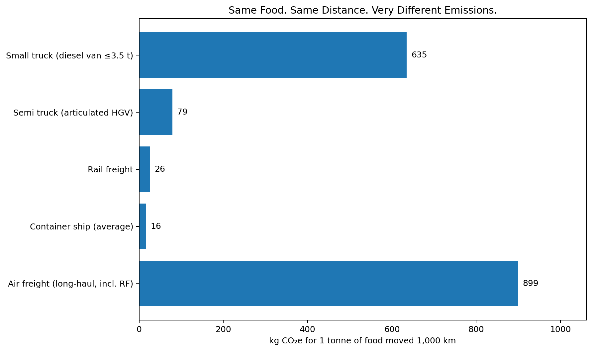
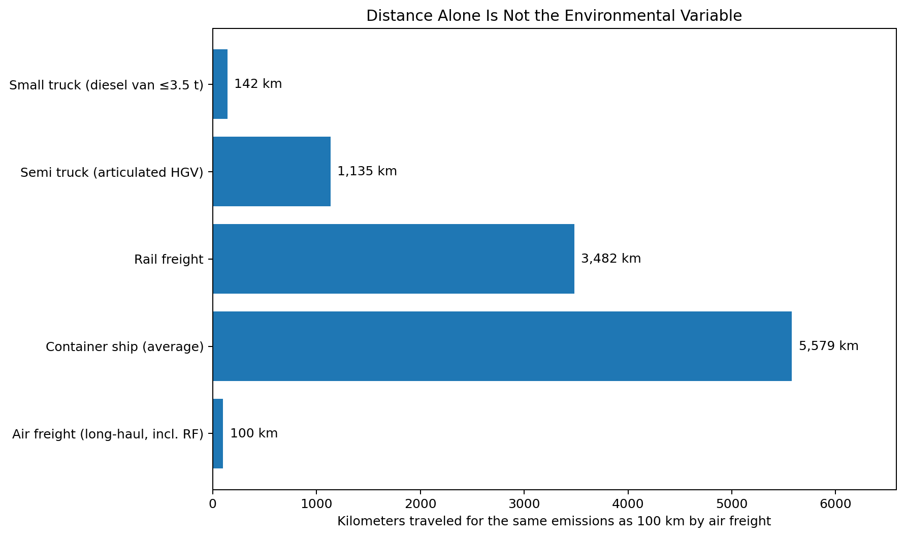

“Local food” is often treated as automatically low-carbon. But moving the same food the same distance can produce radically different emissions depending on how it moves.
I hold the shipment fixed at 1 tonne of food and the distance fixed at 1,000 km. The only thing that changes is the transport mode.

Air freight and small-truck delivery are far more emissions-intensive per tonne-kilometer than a full-size articulated truck, rail, or container shipping. So “food miles” by themselves hide a major part of the story.
Next I ask a different question: how far could each mode move one tonne of food using the same emissions as 100 km of long-haul air freight?

The answer ranges from only about 142 km in a small diesel delivery vehicle to about 5579 km by container ship.
| Mode | 2026 factor (kg CO₂e / tonne-km) |
1 tonne × 1,000 km (kg CO₂e) |
|---|---|---|
| Small truck (diesel van ≤3.5 t) | 0.63511 | 635.11 |
| Semi truck (articulated HGV) | 0.07926 | 79.26 |
| Rail freight | 0.02583 | 25.83 |
| Container ship (average) | 0.01612 | 16.12 |
| Air freight (long-haul, incl. RF) | 0.89939 | 899.39 |
This is a mode-comparison exercise, not a full life-cycle assessment of food. It holds the food itself constant and looks only at transport. Production method, refrigeration, storage, waste, packaging, and seasonal growing conditions can all matter too.
The tonne-km factors are national-average comparison factors, not measurements of a particular truck, train, ship, or aircraft. Load factor, route, vehicle size, refrigeration, and empty running can change real-world results.
Boundary note: the ground/sea/rail factors shown here are from the UK DESNZ 2026 “Freighting goods” table (TTW / transport-operation emissions). The long-haul air factor used here includes radiative forcing (RF), so that assumption should stay visible when interpreting the comparison.
Formula: emissions = weight (tonnes) × distance (km) × emission factor (kg CO₂e / tonne-km).
I used a diesel van ≤3.5 t as the “small truck” case and a non-refrigerated articulated HGV at average load as the “semi truck” case.
UK Department for Energy Security and Net Zero (DESNZ), Greenhouse gas reporting: conversion factors 2026, “Freighting goods” table: official 2026 conversion factors .
Reproducibility files included with this exhibit: transport_factors.csv and calculation.py.